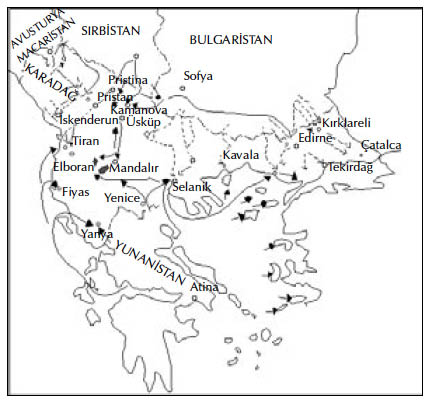
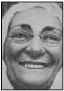

X
Kumandayı devreder etmez Mustafa Kemal yola koyuldu. En kısa yol olduğunu düşündüğü için Fransa’ya geçtiyse de burada daha kısa yolun Avusturya ve Romanya’dan geçtiğine karar vererek yönünü değiştirdi ve Karadeniz’e indi. Sürekli yardım gördüğü içini daha Aralık’ın ilk haftasında İstanbul’a ulaşmıştı bile.
Her şeyi karmakarışık bir halde buldu. Türk orduları tüm sınırlarda ezilmişti. Kuzeyden Sırplar kontrolsüz bir biçimde ilerlemişlerdi. Güneyden saldıran Yunanlılar Selanik’i ele geçirmişler, yirmi beş bin tutsak almışlardı. Bulgarlar, İstanbul’a doğru ilerleyerek toplarıyla kentin sadece 25 kilometre dışındaki Çatalca’da bulunan istihkâmları dövmeye başlamışlardı. Başkentin birkaç kilometre dışı ve Bulgarlarca kuşatılmış olan büyük Edirne istihkâmları haricinde Türkler Avrupa’dan süpürülüp atılmışlardı.
Tüm bu felaket ortasında bir tek aydınlık nokta vardı. Rauf 3isminde genç bir deniz subayı, kumandanı olduğu yaşlı “Hamidiye” kruvazörüyle Çanakkale Boğazı’nın hemen ağzındaki blokajı aşıp geçmişti. Düşman savaş gemileri peşindeyken, Ege Denizi’nde dolanıp şurada burada ortaya çıkarak bir limanı bombalıyor ya da bir nakliye gemisini batırıyordu. Ulusal bir kahraman haline gelmişti; ama bu yiğitlik gösterilerinin genel yenilgi üzerinde hiçbir etkisi olmuyordu.
İstanbul yaralılarla dolup taşmıştı: Hastaneler, kiliseler, camiler, evler hep onlarla doluydu. Ülke baştan aşağı düzensiz mülteci kalabalıklarının oluşturduğu kamplarla dolmuştu. Yiyecek organizasyonu tamamen ortadan kalkmıştı. Binlerce insan kolera ve tifüsten ölüyordu; binlercesi de açlık ve soğuktan. Politikacılar hâlâ iktidarı kapmak için aralarında ağız dalaşı yapmakla meşguldüler. Kısacası ortada olayları denetim altına alabilecek ya da yönlendirebilecek istikrarlı bir hükümet kalmamıştı.
Mustafa Kemal büyük bir kaygıyla ailesinden haber almaya çalışıyordu. Selanik’ten gelen pek çok göçmeni buldu. Ona kentin büyük bir zorbalığa uğradığını anlattılar. Yunanlılar yakalayabildikleri tüm sivil Türkleri öldürmüşler çevredeki tüm köy ve kasabaları da yağmalamışlardı. Sonunda annesini ve kız kardeşi Makbule’yi mülteci kamplarından birinde buldu.
Bir oda kiralayarak onları İstanbul’a getirdi. Zübeyde altmışının üstündeydi. Geçen yıllarla şişmanlamıştı, gözleri de iyi görmüyordu. Selanik’ten kaçışları sırasında Makbule’yle birlikte açlık ve soğuktan çok acı çekmişlerdi. Yaşlı kadın bu süre içinde hızla kocamıştı. Oğlunu görmek onu fazlasıyla memnun etti. Onun kendilerini İstanbul’a götürmesine sessizce boyun eğdi; ama orada hiç huzur bulamadı. Bütün gün boyunca odadaki divana bağdaş kurup oturuyor, öne arkaya sallanarak Allah’a dua ediyordu. Selanik kâfir Yunanlıların elindeydi, akrabaları katledilmişti; evi elinden gitmişti; sahip olduğu her şeyi kaybetmişti. Tam anlamıyla mahvolmuştu.
Ailesini yerleştirir yerleştirmez Mustafa Kemal Harbiye Nezareti’ne durumunu bildiren bir yazıyla başvurdu. Gelibolu Yarımadası’nın daraldığı boğazda, Anadolu kıyısında yer alan Bolayır önlerindeki istihkâm hattını tutan tümenin kurmay başkanlığına atandı. Bu çok önemli bir mevkiiydi. Bulgarlar buradan hücum edecek olurlarsa Boğazların kontrolünü ele geçirerek Asya’daki topraklara giden yolu açabilir ve İstanbul’un dış dünyayla bağlantısını kesebilirlerdi.

HARİTA: Balkan Dev letleri’nin 1912-19l3’teki I. Balkan Harbi’ndeki hücum hatlarını gösteren harita.
NOT: AA ve BB olarak işaretlenen hatların arası Türkiye’nin Avrupa topraklarının 1911’deki konumunu göstermektedir. CC işaretiyle İstanbul arasındaki küçük alan ise, savaştan sonra bu topraklardan Türkiye’ye kalan kısmı göstermektedir.
Mustafa Kemal, General Sava Savof komutasındaki Bulgar birliklerinin saldırısından hemen önce Bolayır’a ulaşabildi.
Buradaki istihkâmlar elli yıl önceki Kırım Harbi sırasında ingiliz mühendislerin inşa ettiği hattın alelacele onarılan kalıntılarından ibaretti. Bulgarlar hatta hiç durmaksızın saldırıyorlar, Türklerse inatçı bir sabırla bu hattı tamir ediyorlardı. Çatışmalar son derece şiddetli cereyan eden bu çatışmayı, sadece tüm cephelerde geçerli bir ateşkes durdurabildi.
Bundan sonra olaylar hızla gelişti. Büyük Devletler bir barış konferansı yapılması çağrısında bulundular. Balkan Devletleri, İstanbul dışında Avrupa’daki tüm Türk topraklarının aralarında bölüşmeleri için kendilerine verilmesini talep ettiler. Bulgarlar da Edirne’nin derhal kendilerine teslim edilmesinde ısrarlıydı.
Türkler kendi aralarında bölünmüşlerdi. Titrek bir ihtiyar olan Sadrazam Kâmil Paşa’nın önderliğindeki bir grup, her ne pahasına olursa olsun, barıştan yanaydı. Diğerleri, özellikle de genç subaylar hiçbir yerin teslim edilmemesini istiyorlardı. Ayaklanmalar, politikacıların entrikaları, kaos almış yürümüştü ve ortada olaylara yön verebilecek hiçbir güç bulunamıyordu.
Bütün bu kargaşanın ortasında Enver, Trablusgarp’tan döndü. Hiç zaman kaybetmedi. ittihat ve Terakki Cemiyeti’ni toplantıya çağırdı, genç subayları çevresine alarak bir heyet-i vükela toplantısı sürerken Bâb-ı Ali’ye girdi.4 Kendisini durdurmaya çalışan Harbiye Nazırı Nazım’ı vurdu. Kâmil Paşa ve diğer nazırları revolveriyle kovalayarak Cemiyet’ten Talat ve Cemal’in yanı sıra Sadrazam yaptıkları Mahmut Şevket Paşa ile birlikte kontrolü ele geçirdi.
Hiçbir şekilde zaafa izin vermedi. Politikacıların bir kesimi ona muhalifti; onları astı. Ayaklanmaları bastırdı ve Balkan Devletleri’yle barış görüşmelerine girmeyi kesin şekilde reddetti. Ancak, Bulgarların kuşatması altındaki Edirne’yi kurtarmak önündeki temel sorun olarak hala duruyordu. Düşmana mevzi değiştirtmek için büyük bir manevra planladı. Bu, kendisine göre çok iyi bir plandı; Haliç’ten donanmayı çıkarıp Ege’ye gönderecek, donanmanın ateş gücünün desteğindeki Onuncu Ordu Birlikleri, Bolayır’ın biraz kuzeyindeki Şah Kuyu’ya 5 çıkacak; Bolayır Birlikleri düşmana hücum edince, Şarköy Birlikleri de düşmanı sağ cenahtan yakalayacaktı. Bundan sonra iki kol birleşerek kuzeye doğru en kısa yoldan geçerek Edirne’ye gidecekti. Bu harekât düşmanı şaşırtıp bozguna uğratacak ve onları Çatalca hatlarıyla Edirne’den vazgeçmeye zorlayacaktı.
Savaş gemilerinden birinde yapılan bir kurmay toplantısında Mustafa Kemal de hazır bulunuyordu. Eleştirilerinde çok acımasız davrandı. Askeri istihbarata göre Şarköy’e hâkim tepeler Bulgarlarca ele geçirilmişti ve bu koşullarda yapılacak bir çıkartma son derece tehlikeli olacaktı. Bolayır Birlikleri’nin Bulgarları sürüp çıkarması olanaksızdı. Bunu yapacak olurlarsa iç hatlara sahip olan düşman, karşılarına son derece üstün kuvvetler çıkarabilirdi. Plan iyi gibi görünüyordu; ama ayrıntılar üzerinde iyi çalışılmamıştı; pratik geçerliliği yoktu.
Enver’in canı sıkıldı. Komutan kendisiydi. Mustafa Kemal’e daha az konuşmasını belirterek, sadece kendisinden isteneni yapmasını söyledi.
Harekât planlandığı şekilde yürütüldü. Bolayır Birlikleri’nden iki kolordu 8 Şubat’ta şafak vakti saldırıya geçti. Mustafa Kemal de bu saldırı birliğindeydi. Bir on kilometre kadar ilerlediler ve çok kalın bir sis tabakası karşısında durmak zorunda kaldılar. Bulgarlar sol yandan sokularak ateş açtılar, Kolordulardan biri yarıldı ve geri çekilmeye başladı. Mustafa Kemal’in kurmay başkanı olduğu ikincisi de savaşarak geri çekilirken güçlerinin yarısını kaybetti. Şarköy’e çıkartma yapmaya başlayan Onuncu Ordu, Bulgarlarca yakalandı ve altı bin asker kayıp verdirilmiş olarak yeniden gemilerine dönmek zorunda kaldı.
Harekât tam bir başarısızlıkla sonuçlanmıştı. Bir ay sonra Edirne düştü ve Enver’in önderliğindeki hükümet, Kâmil Paşa ve hükümetince önerilen barış şartlarının aynısını imzalamak zorunda kaldı.
Mustafa Kemal İstanbul’a döndü. Yenik ve bitkin düşen Türkiye, yaralarını sarmaya çalışıyordu. Düşmanları onun bıraktığı toprakların paylaşımı konusunda çekişiyorlardı. Ansızın aralarında savaş patlak verdi. Bulgaristan Sırbistan ve Yunanistan’a saldırdı; ancak, yenik düşerek sınırlarına dönmeye mecbur oldu. Eski müttefikler Türkleri unutmuş, çılgınca birbirlerinin boğazına sarılmışlardı.
Enver bu fırsatı kaçırmadı. Yerinde bir cesaretle ve savaş ilan etmeksizin, bulabildiği tüm kuvvetleri yola çıkarttı. Bunlar geride kalan birkaç küçük Bulgar birliğini ezerek ilerlediler ve doğru Edirne’ye girdiler. Öncü birliklerin süvari kumandanı olarak, bando çalınır, bayraklar dalgalanır ve yerli halk zeytin dallarıyla yolunu süslerken, Enver at üstünde Edirne’ye “Muzaffer” sıfatıyla girdi.
Kente giren asker kollarından birinin kurmay heyetinde Enver’in bu gösterisi yüzünden kapıldığı tiksinti ve öfke içinde, kendi kendine homurdanan, az tanınmış ve dikkat çekmeyen biri olarak, Mustafa Kemal de yer almaktaydı.

Zübeyde: Mustafa Kemal’in annesi